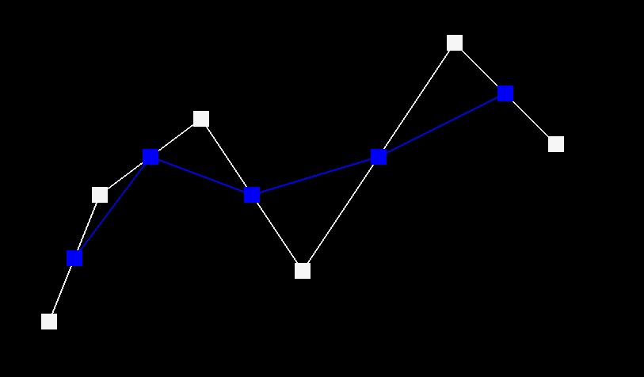

Overview
In Project 2, we delve into mesh editing techniques by implementing Bezier curve evaluation with 1D de Casteljau subdivision, area-weighted vertex normal calculation, and Loop Subdivision for mesh upsampling. We employed de Casteljau's recursive approach to render smooth curves and extended this to 3D for Bezier surface modeling. For mesh manipulation, we developed algorithms for edge flipping and splitting, which allowed us to explore the intricacies of the halfedge data structure. This project showcases the storing, creating, and editing of mesh geometries, utilizing techniques of data structure traversal, geometric interpolations, and upscaling through subdivisions.
Section I: Bezier Curves and Surfaces
Part 1: Bezier Curves with 1D de Casteljau Subdivision
Briefly explain de Casteljau's algorithm and how you implemented it in order to evaluate Bezier curves.de Casteljau's algorithm is a recursive algorithm used to take a collection of points and interpolate, creating a Bézier curve. The algorithm works as follows:
- Start with a list of control points, including the start and end point. Connecting these lines creates a linear interpolation of the polygon.
- Next subdivde each segment (the line connecting two control points) by the ratio t, using (1-t) to parameterize the segment. Connecting these lines creates a linear interpolation of the polygon with one fewer segment
- Repeat the division process using the new polygon, that has 1 fewer segment, until you arrive at a single point. This point will be on the Bézier curve.
- Repeat this for each value of t creating the full Bézier curve.
We implemented this algorithm by taking in a list of points then looping through each point and it's preceeding point and calling the lerp (linear interpolation function) for all values of t. We then call this function recursively until only one point remains for each t value. Thsi creates the Bézier curve.
Take a look at the provided .bzc files and create your own Bezier curve with 6 control points of your choosing. Use this Bezier curve for your screenshots below.
This is the Bézier Curve using the following 6 control points: (0.200, 0.350), (0.300, 0.600), (0.500, 0.750), (0.700, 0.450), (1.000, 0.900), (1.200, 0.700)
Show screenshots of each step / level of the evaluation from the original control points down to the final evaluated point. Press E to step through. Toggle C to show the completed Bezier curve as well.
|
|

|
|
|
|

|
Show a screenshot of a slightly different Bezier curve by moving the original control points around and modifying the parameter \(t\) via mouse scrolling.
Here is an image showing the 5th control point moved downwards, and the t scrolled closer to zero.
Part 2: Bezier Surfaces with Separable 1D de Casteljau
Briefly explain how de Casteljau algorithm extends to Bezier surfaces and how you implemented it in order to evaluate Bezier surfaces.In order to extend to Bezier surfaces we are now dealing with 3D points. The same recursive function is used as in the 2D case but is used as a helper function. In order to extend to surfaces this recursive algorithm is applied first in one direction (the u-direction), and then in the perpendicular direction (v-direction), treating each direction's calculations as constructing curves that define the surface. The u and v are parameterize variables like t that range from 0 to 1. To implement this we created a helper function identical to the 2D case which handles the input of 3D points. Our main evaluate function loops through all the rows in the 2D array grid of control points and passes each row and u parameter to the helper function. The helper function returns all 4 of the single points found on the curves (at that u value, it does this for all u values to create 4 separate curves). These 4 points are then returned and the main fucntion then uses those points and passes the columns and the v parameter into the helper function to do the same in the perpendicular direction thus getting a surface.
Show a screenshot of bez/teapot.bez (not .dae) evaluated by your implementation.
Here is a rendering of a teapot using the Bezier Surface implementation explained above:
Section II: Triangle Meshes and Half-Edge Data Structure
Part 3: Area-Weighted Vertex Normals
Briefly explain how you implemented the area-weighted vertex normals.- Initial Setup: We are given a vertex which stores its location and one halfedge associated with that vertex.
- Forming a Triangle: From the initial halfedge, we move to the next halfedge in sequence and continue to the next one after that (using the store next associated with the current halfedge). These steps help us identify the three vertices (including the starting one) that form a triangle.
- Identifying Vertices: While traversing through these halfedges, we store the next vertices denoting a (the starting vertex), and b and c (the next two vertices that form the triangle abc).
- Vector Generation: We then generate two vectors: ab and ac, by subtracting the coordinates of the starting vertex from the coordinates of b and c, respectively.
- Normal Vector Calculation and Area Wieghting: The cross product of vectors ab and ac is computed to find the normal vector to the plane of the triangle. This normal vector also is proportional to the area of the triangle. This normal vector is added to a cumulative total of normal vectors for all triangles adjacent to the starting vertex. This allows for area based wieghting since the magnitude of the normal vector is based on the area of its repective triangle.
- Traversal and Summation: After completing calculations for one triangle, we move to the next by taking the twin of the current halfedge and then its next halfedge. This process repeats until all neighboring triangles have been visited, ensuring that we don't process the same edge twice and that all areas around the vertex are covered.
- Normalization to Create Death Ray: We then normalize the summed vector and return it. This gives a Death Star ray coming out from the vertex. We now have a Death ray!
Show screenshots of dae/teapot.dae (not .bez) comparing teapot shading with and without vertex normals. Use Q to toggle default flat shading and Phong shading.
Teapot Without Vertex Normals
Teapot With Vertex Normals
Part 4: Edge Flip
Briefly explain how you implemented the edge flip operation and describe any interesting implementation / debugging tricks you have used.We are first given an edge to flip that we pull the halfedge associated with it from. We then proceeded to systematically store all associated half-edges, vertices, and faces of the two triangles abc and bdc. We decided to “rotate” everything clockwise so the left face becomes the top face. We then reassign all the original vertices and faces to their correct new halfedges. We then utilized the setNeighbors for each halfedge allowing us to set all the halfedges to have the correct new properties (which new halfedge it becomes, its twin, its vertex, its edge, and its face). One method to avoid bugs was the local storage of references to all original halfedges, vertices, and faces.
Show screenshots of the teapot before and after some edge flips.
Here is a before and after flipping the middle four edges of our teapot:
|
|
|
Write about your eventful debugging journey, if you have experienced one.
Our code ran the first time without issue due to our strategy of locally storing references to all the halfedges, vertices, and faces.
Part 5: Edge Split
Briefly explain how you implemented the edge split operation and describe any interesting implementation / debugging tricks you have used.
To execute the edge split operation, we started by storing all the halfedges, vertices, and faces. We then created a new vertex (this will be the middle vertex), six new half-edges, three edges (since we reuse the original edge and shrink it), and two faces. The new vertex position was set at the midpoint with the code m->position = (c->position + b->position) / 2. Utilizing the setNeighbors function, we assigned all the half-edges their correct properties.
We optimized the process by reusing cb creating cm, reducing it to half its length, thus only necessitating the creation of three new edges. We also moved the two left triangles to the top, which allowed us to only introduce two new faces.
We made sure set each vertex, halfedge, edge, and face to its intended state, regardless of redundancy. This minimized debugging issues. For instance, we confirmed that:
a->halfedge() = ab;
b->halfedge() = bd;
c->halfedge() = ca;
d->halfedge() = dc;
Even though a and d would not typically change, b and c could potentially be set incorrectly. To rectify this, we made the explicit reassignments as shown above.
Additionally we also locally stored references to all original information as done for the splitEdge which eliminated any common bugs
Show screenshots of a mesh before and after some edge splits.
Here is a before and after of splitting the middle four edges of our teapot

|
|
Show screenshots of a mesh before and after a combination of both edge splits and edge flips.
Here is a before and after of splitting and flipping the middle four edges of our teapot
|
|
|
Write about your eventful debugging journey, if you have experienced one.
Our code ran the first time without issue due to our strategy of redundantly assigning all elements to their new location regardless of if that location may be unchanged and, locally storing references to all the halfedges, vertices, and faces.
If you have implemented support for boundary edges, show screenshots of your implementation properly handling split operations on boundary edges.
N/A
Part 6: Loop Subdivision for Mesh Upsampling
Briefly explain how you implemented the loop subdivision and describe any interesting implementation / debugging tricks you have used.
We start by iterating over all vertices, and loop around the surrounding triangles of each vertex where we computed u, n, and the newPosition. Once the newPosition was calculated, we set it for each vertex.
We then loop through all the edges, and for each edge we loop around the diamond surrounding the edge to determine the newPosition based on the vertex weights at the edges. These new positions are temporarily stored with each edge, ready for the upcoming split operation.
We introduced a isSplit boolean for edges to track if they had already been split. For edges not marked, we execute the splitEdge function. In order to make splitEdge functional for this part, had to set isNew for all new edges (but not for the 2 halves that made up the original edge) and set isSplit to all 4 edges, also set newPosition for the new vertex that was stored in the newPosition of the edge.
Afterward, we iterated over the edges once more, flipping those that were newly created and connected an old vertex to a new vertex. After which we reset the 'isNew' and 'isSplit' flags for future upsamples.
Finally, we cycled through the original vertices to update their positions to the newPosition and reset their isNew status. This last step ensured that only the original vertices, which had their newPosition computed earlier, would be moved.
In terms of debugging, we encountered issues with fractional values defaulting to integers, resulting in a bumpy mesh. Another challenge was recognizing that the two halves of an original split edge were not flagged as 'new', which necessitated the introduction of the 'isSplit' variable to circumvent infinite loops. As for debugging tricks, we utilized the simple cube .dae file for its clarity in visualizing the process, and we isolated the split and flip operations to pinpoint issues more effectively.
Take some notes, as well as some screenshots, of your observations on how meshes behave after loop subdivision. What happens to sharp corners and edges? Can you reduce this effect by pre-splitting some edges?
We noticed that sharp edges and corners are gradually smoothed and "rounded" out by the subdivision process. This is because loop subdivision works by "averaging" the positions of vertices to create new ones, effectively rounding off sharp angles in the geometry. As a result, the overall mesh becomes smoother with each subdivision step.
We can defintely reduce the smoothing effect by pre-splitting some edges. By adding additional edges close to the sharp features before applying subdivision, you can help maintain some of the model's original sharpness. This is because the subdivision process will have more geometry to work with and anthough will still smooth out the features it will smooth the more densely packed regions less.

|
|
|
We can see how when we add extra edges by splitting near one of the corners that specific sharp corner's geometry is preserved.
Load dae/cube.dae. Perform several iterations of loop subdivision on the cube. Notice that the cube becomes slightly asymmetric after repeated subdivisions. Can you pre-process the cube with edge flips and splits so that the cube subdivides symmetrically? Document these effects and explain why they occur. Also explain how your pre-processing helps alleviate the effects.
The asymmetric effect occurs due to asymmetry in the location of the vertices. We can use the process of flipping edges to better align them so that when the subdivision process occurs it occurs in a more symmertic manner. As long as there is uniformity within the orientation of the edges this will help to reduce asymmetries.
For example the cub shown below has its middle edges initally aligned going from the top left corner to the bottom right (when looking at each face along its inward normal). This creates an asymmetric blob. When we align the edges so that they connect with each other as shown below this creates a more symmetric looking blob since the edges follow a more uniform arrangement.
|
|
|
|
|
|
If you have implemented any extra credit extensions, explain what you did and document how they work with screenshots.
N/A
Part 7 (Optional, Possible Extra Credit)
Save your best polygon mesh as partsevenmodel.dae in your docs folder and show us a screenshot of the mesh in your write-up.N/A
Include a series of screenshots showing your original mesh and your mesh after one and two rounds of subdivision. If you have used custom shaders, include screenshots of your mesh with those shaders applied as well.
N/A
Describe what you have done to enhance your mesh beyond the simple humanoid mesh described in the tutorial.
YOUR RESPONSE GOES HERE